Andrew Snell
Award winning documentary filmmaker,
television producer and series editor.
Uganda
I was born in Uganda — the "Pearl of Africa", as Winston Churchill called it — and had an almost idyllic childhood. Uganda then was sparsely populated with wonderful landscapes, lakes and forests and I spent a lot of time on my own wandering and looking. The insects, birds and sheer richness of the natural world were endlessly exciting, but it was the openness of the landscape that stayed with me.
I remember thinking we English had a lot to learn from Africans and their way of life, and I remember as a young boy I liked to join a local family for supper. We would all sit on the dirt floor, roll matoke in our hands, put a thumb in it to make a hole and dip it into the delicious groundnut stew we were sitting around.
Looking back, that early curiosity about places and the people who inhabit them has probably been behind much of what I have done since. Today I can't live without a banana tree in my garden.
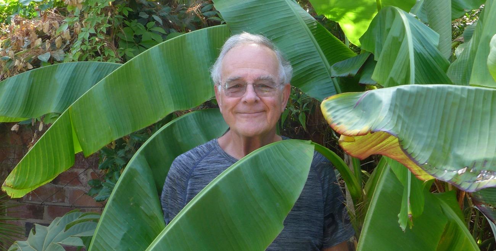
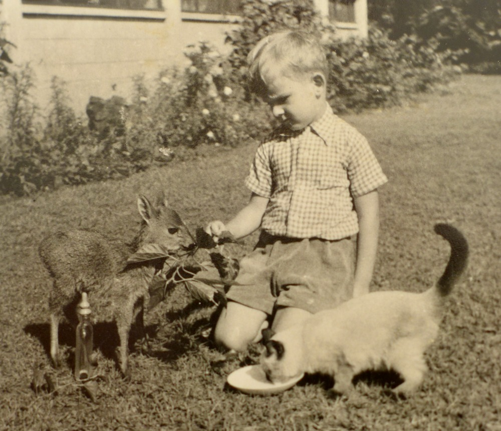
School & Oxford
At thirteen I came to Britain and went to Bryanston, a school with many boys from artistic and musical families. I think that was where my interest in the arts really began to develop.
I was lucky enough to get a place at Oxford, where I studied Philosophy and Psychology, including animal behaviour, but spent a considerable amount of time in the theatre. I directed The Sport of My Mad Mother and Waiting for Godot and, as Director of the Oxford Experimental Theatre Group, had the job of reading hundreds of scripts in search of a play to take to the Edinburgh Festival.
After too many unmemorable scripts, I opened one and before I had reached the bottom of the first page thought: we have to do this. It was Rosencrantz and Guildenstern Are Dead by an unknown playwright called Tom Stoppard. I didn't ultimately direct the production, but the OETG took the play to Edinburgh, from where it was picked up by the National Theatre.
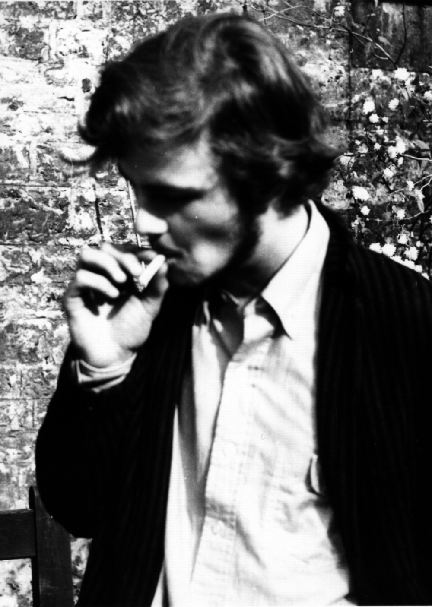
Early Career
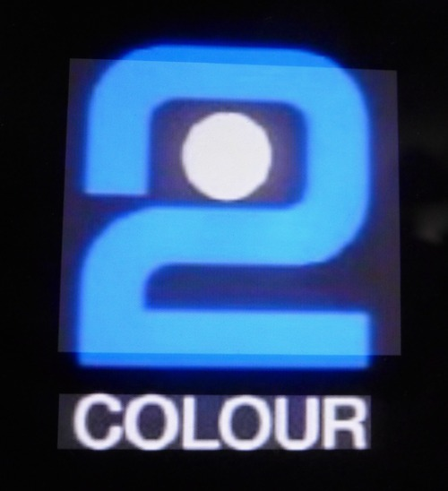
After Oxford I joined Southern Television and a year later moved to the BBC Natural History Unit in Bristol. My work at Oxford meant I could put some of my knowledge of animal behaviour to use, including making programmes about sleep and dreams. I liked the fascinating but rather cosy life at the Natural History Unit, but eventually found myself having to make a decision: did I want to spend the rest of my life making natural history films? I chose not. So I went to Manchester and my education started all over again.
Manchester
For eighteen months I was a director on Look North. We would discuss an idea in the morning, go out and film it, edit it in the afternoon and transmit it that evening. It was a necessary education for a director who found decision making difficult.
Eventually I got to make my own films. One was Fabric of an Age, about Manchester and King Cotton, with the great historian A. J. P. Taylor. He agreed to make the film on one condition: he wouldn't write anything. Even after editing, he refused to read the linking script I wrote for him, so I had to interview every required sentence out of him — getting it to come out word for word, in the right order and at precisely the right length.
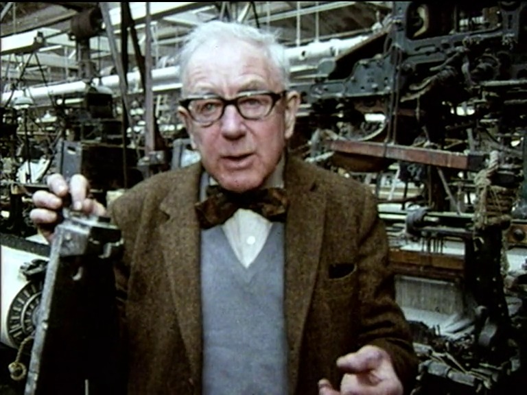
A Taste of Britain
The most important thing to come out of Manchester for me, though, was A Taste of Britain. The idea owed something to Elizabeth David's French Provincial Cooking. I loved the way she could reveal the geography, history and culture of an entire region through the food it produced.
I spent around five years working on A Taste of Britain. What interested me were the working people — farmers, fishermen, bakers and cheesemakers whose knowledge had been valued and handed down for generations. To me they were celebrities then, and they still are.
While working on A Taste of Britain I was invited to join a new arts series that London Weekend Television was setting up. Another tough choice, but I went for the new chapter.
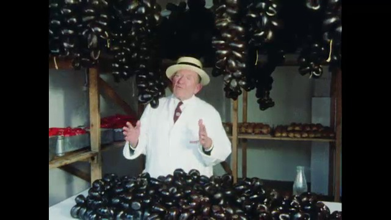
The South Bank Show
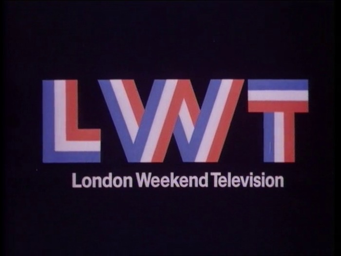
Working on The South Bank Show was a joy and a privilege. Any good artist was a possible subject. I remember sharing with Melvyn Bragg the excitement of going up Walton Street in Oxford to see the latest Bergman. A letter was sent and soon we were on a plane to Munich to film Bergman's first ever television interview.
Melvyn and I didn't always agree. I wanted to make documentaries without presenters; understandably, he always wanted to be in them. But I have great respect for him and admiration for the way he supported filmmakers.
On one occasion I returned from filming in Maine deeply unhappy with the rushes from a cameraman I didn't get on with. I told Melvyn and he agreed to fund me to go back and reshoot it with the wonderful DoP Peter Middleton. I did, and the result became The Real World of Andrew Wyeth, one of the films of which I am most proud.
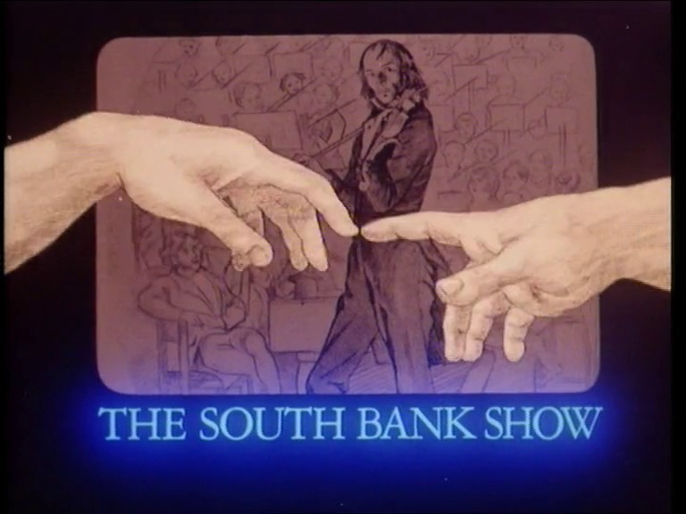
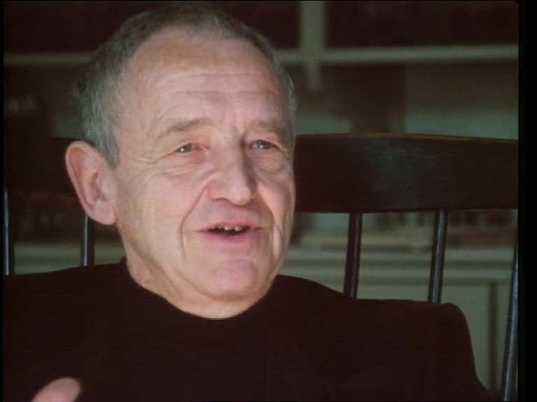
Artifax
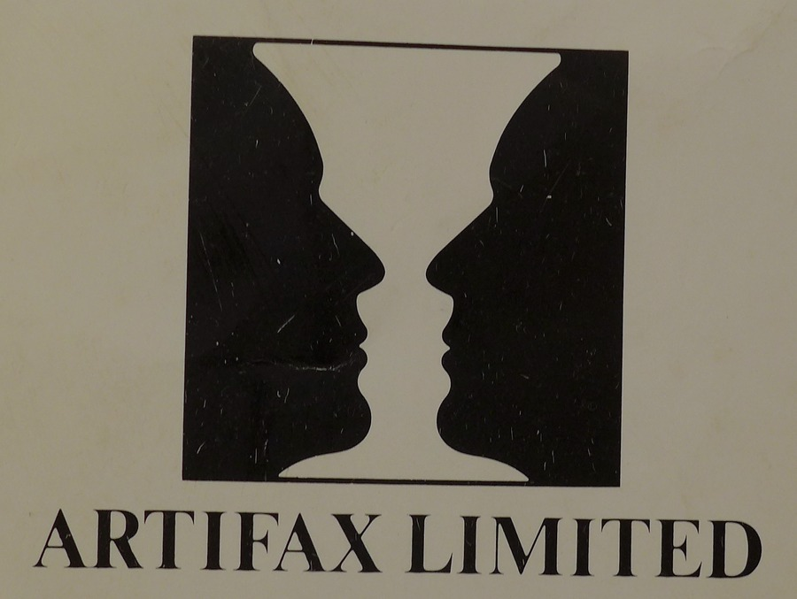
After five years on The South Bank Show, I took a risk and set up my own company, Artifax Ltd. Channel 4 was just starting and I liked the idea of being my own boss so I could make the programmes I wanted.
The early days of Channel 4 were special. For two or three years ideas were commissioned for what they were, without any thought of what slot they were going into or how big an audience they would get. There was a lot of dross — some of it mine — but there were gems. I think a public service broadcaster like the BBC should still do a bit of that.
Artifax made some great programmes and won quite a few awards, including the documentary I made with the great Sir Harrison Birtwistle. But running a company also meant you ended up being part accountant, part HR, part development executive and part facilities manager, as well as trying to be a producer and director.
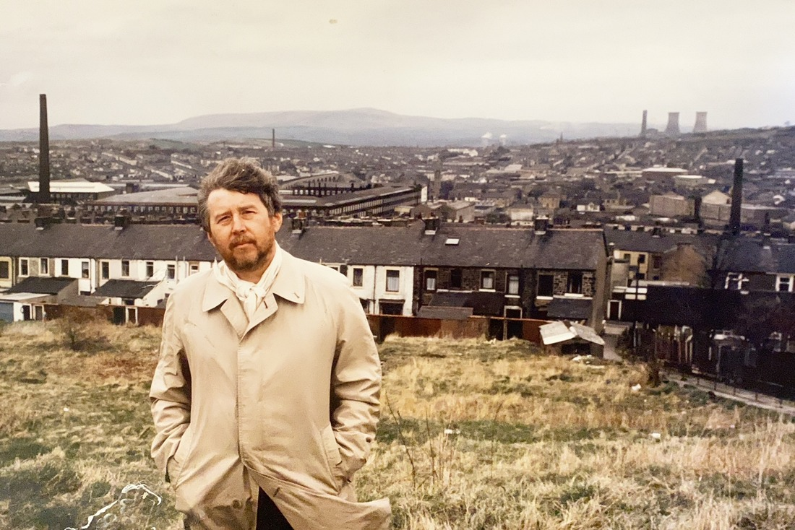
BBC Omnibus
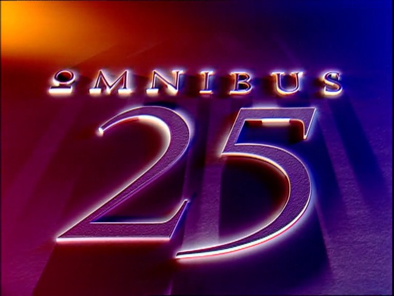
After eight years at Artifax I was offered what was probably one of the best jobs in arts television: Editor of the BBC's Omnibus. Instead of making all the films myself, I could listen to other directors' ideas, encourage them and help them make the films they wanted to make. We commissioned around twenty hour long films each year, and during my time Omnibus twice won the BAFTA for Best Arts Programme.
There is one other thing I remember about those BBC years, although it may sound rather unfashionable now. Most of the factual departments of the BBC were together in Kensington House, and at lunchtime people would meet in the BBC bar. Ideas were discussed, problems shared and conversations crossed departmental boundaries. Arts talked to science, talked to sport.
I think something valuable can be lost when everybody retreats into separate companies and has to compete rather than share. Creativity often comes from unexpected conversations with people who see the world differently from you.
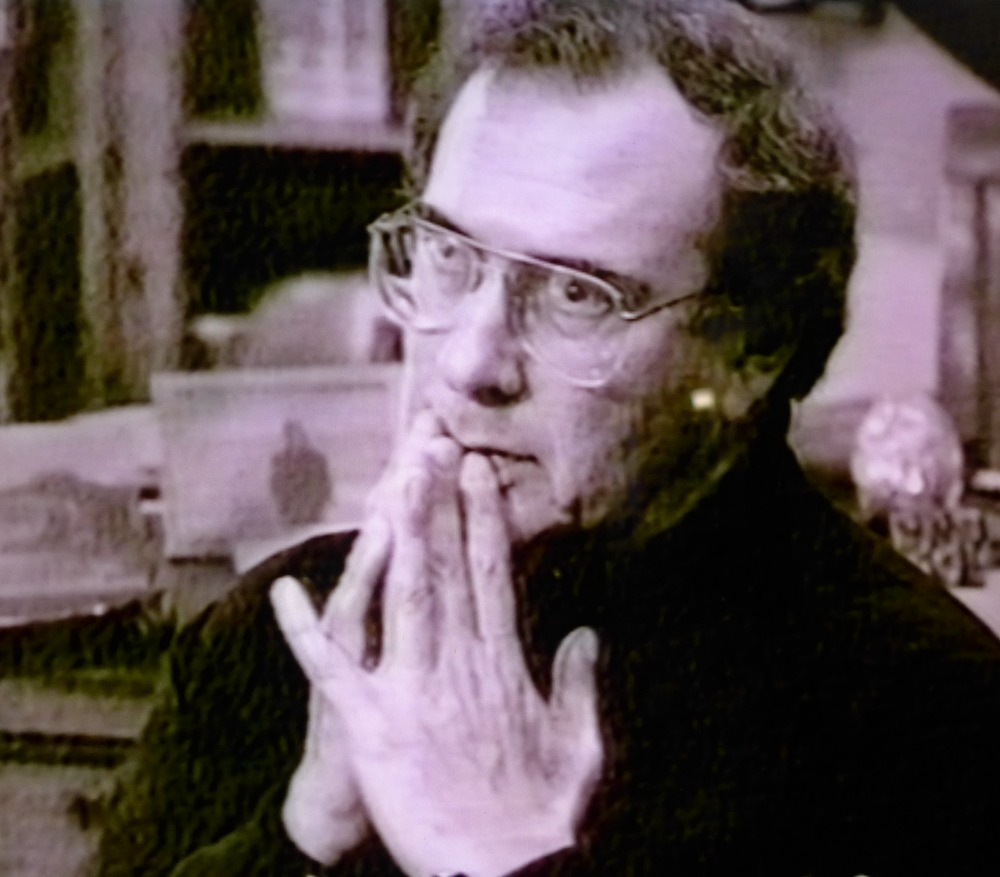
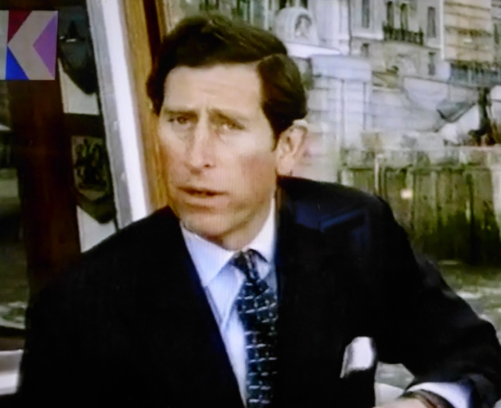
Reflections
I eventually left Omnibus and returned to making films as a freelance. But very quickly things became different. You had to shoot it yourself and you had to edit it yourself. There is a freedom in that, but there is also a BUT: creativity and quality.
It's a long way from where I started, when you needed a four man crew even for a simple interview. That sounds excessive today, but if the crew was good, every one of them made a contribution creatively as well as technically. Working together, they helped you realise your idea better than you ever imagined.
For a director like me, working with a really good crew was a creative experience like no other.
I miss that.